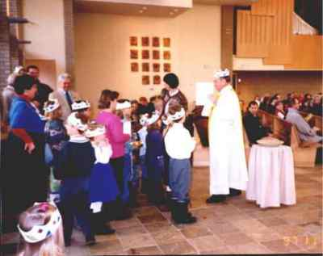
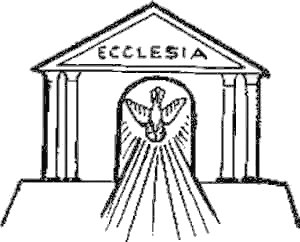

PREGUNTAS FRECUENTES
P: ¿Qué es la Iglesia Conciliar"?
R: La Iglesia Conciliar es una nueva religión que consiste en un nuevo código canónico (ley), una nueva fe (creencias) y un nuevo culto (liturgia), sancionados por las autoridades vaticanas desde la finalización de Concilio Vaticano II (1962-65). Su finalidad es la destrucción sistemática de la fe y de la moral Católicas tradicionales, en aras de una "Nueva Evangelización," dirigida no a convertir a los descarriados, sino a decirles que dentro de sus creencias pueden ser salvos.
P: ¿Cuándo empezó esta nueva religión??
R: Quizás la primera señal fue la Encíclica de Juann XXIII Pacem in Terris, que habla favorablemente de un gobierno mundial. La nueva religión fue impuesta a la fuerza a los miembros de la Iglesia Católica después de que el Concilio Vaticano II abriera sus puertas al mundo moderno. Según una teoría, la nueva religión se estableció oficial e inequívocamente el 21 de Noviembre de 1964, cuando Pablo VI promulgó Lumen Gentium, la "Constitución Dogmátia de la Iglesia." Este documento, apartándose de la fórmula tradicional de igualar la "Iglesia de Jesucristo" con "la Iglesia Católica", eligió la fórmula innovadora "La Iglesia de Jesucrissto subsiste en la Iglesia Católica." De esta manera, la estricta identidad entre la Iglesia Católica y la Iglesia fundada por Jesucristo, enseñada infalible y dogmáticamente por el Primer Concilio Vaticano (1869-70), fue aniquilada. De acuerdo a otra teoría, la Nueva Religión nació el 28 de Octubre de 1958, cuando el Cardenal Angelo Roncalli ocupó el trono papal como Juan XXIII.
P: ¿Cual es el significado de la palabra "subsiste"?
R: Es una palabra ambigua que puede interpretarse como que la Iglesia de Jesucristo no se encuentra total y enteramente en la Iglesia Católica, sino que también puede encontrarse parcialmente en otras "comunidades eclesiales".
P: ¿Cuales son los signos externos que prueban que la Nueva Religión intenta destruir el Catolicismo Tradicional?
R: Son muchos y variados, incluyendo, pero no limitándose a: Nueva Misa, Nuevo Código Canónico, Nuevo Calendario Litúrgico, Nueva Evangelización, Nuevo Catecismo y, más recientemente, Nuevo Rosario.
P: ¿Con qué propósito han sido impuestas estas novedades?
R: Con el propósito de establecer un Nuevo Ecumenismo, que permitirá la unión de todas las denominaciones y religiones sin requerir la conversión a la Fe Católica. Aparentemente, el fin es una religión mundial, una "paz" una coexistencia de todas las religiones fundidas en una sola, en la cual los Derechos de Dios y nuestros deberes hacia Él están subordinados a los Derechos del Hombre, la Justicia Social, la Dignidad de la Persona Humana y la Libertad de Conciencia. "Reconciliar la diversidad" y la "unidad en la diversidad" son grandes palabras aquí. Todo esto viene de la herejía modernista, definida por el Papa San Pío X como la "síntesis de todas las herejías", en su Encíclica PASCENDI DOMINICI GREGI, en la que la condena fuertemente como absolutamente destructiva de los fundamentos de la Religión Católica.
P: ¿Por qué tantas cosas han sido "revisadas" o "puestas al día?
R: Para hacer desaparecer toda traza de Catolicismo para no ofender a los Protestantes, Judíos, y otras religiones. Solamente cambiando, "revisando," o "poniendo al día" la Fe tradicional puede introducirse la Nueva Religión. Todo esto se desarrolla bajo el disfraz de una "renovación"."
P: ¿Qué efectos producen en la fe tantas innovaciones?
R: La fe ya no tiene un sentido de equilibrio y tampoco es clara en cuanto a lo que enseña la Iglesia. Tantos trastornos han dado la impresión de que nada es sagrado ni inmutable, que todas las cosas están sujetas al cambio según el antojo del Mundo Moderno. Mucha gente ahora cree que la Iglesia es humana y que las enseñanzas y reglas pueden cambiar si se aplica la debida presión.
P: ¿Por qué estas innovaciones son peligrosas?
R: Las innovaciones que están siendo impuestas en la Iglesia por la Nueva Religión son peligrosas precisamente porque están muy bien escondidas y a veces son imperceptibles para el fiel. De todas formas, cuando no es tratado durante tantos años, el más pequeño virus puede manifestarse en un brote visible. Después de cuarenta años, los virus introducidos por el Concilio Vaticano II están quebrando la "piel" con una velocidad alarmante.
P: ¿Esta Nueva Religión desaparecerá pronto, en algún momento?
R: Probablemente no hasta que alcance su mayor grado de iniquidad. Avanza cada día más, haciendo ostentación de su apostasía.
Abajo, algunas fotografías que dan una pequeña idea de la Nueva Religión
CLASE DE YOGA O ALGO PARECIDO,
EN UNA IGLESIA CONCILIAR

DURANTE UNA "MISA", PRESUMIBLEMENTE EL DÍA DE CRISTO REY
_______________________________________
